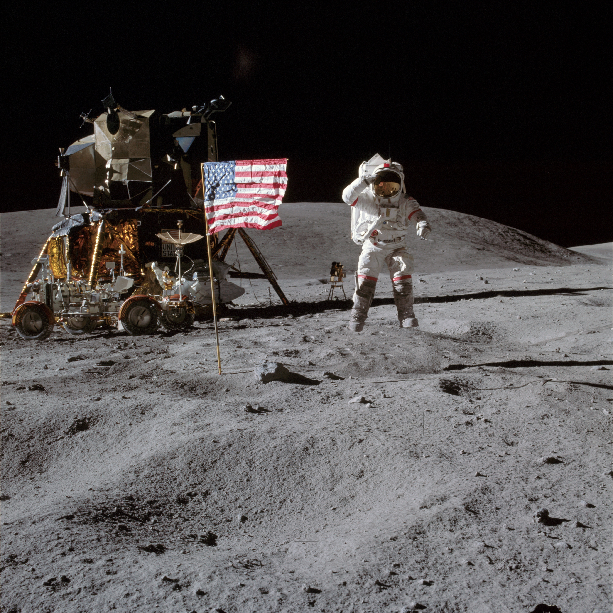

NuStar Stares at the Sun
Source: NASA Image and Video Library, NASA ID: PIA19821
An image of the sun using compiled images from NASA's Nuclear Spectropscopic Telescope Array (NuStar), Japan's Hinode spacecraft, and NASA's Solar Dynamics Observatory (SDO), all taken around the same time on April 29, 2015. The different telescopes use different wavelengths of light to produce the image. The NuStar portion of the image uses high-energy X-rays and appear blue in the photo, Hinode uses low-energy X-rays and appears green in the photo, and SDO uses extreme UV light and the image is yellow/red in the photo.
Crab Nebula

Source: NASA Image and Video Library, NASA ID: PIA03606
This photo of the Crab Nebula was compiled in 2005 from 24 individual exposures taken with the NASA/ESA Hubble Space Telescope.
Jupiter
Source: NASA Image and Video Library, NASA ID: PIA21390
An enhanced color image of Jupiter's south pole created by citizen scientist Gabriel Fiset using data from NASA's Juno spacecraft. The photo shows oval storms among the cloudscape. Swirls and eddies in the image depict the "organized turbulence" of Jupiter's belts.
Astronaut John Young
Source: NASA Image and Video Library, NASA ID: AS16-113-18339
Taken April 20, 1971, the image shows Astronaut John W. Young, commander of the Apollo 16 mission saluting the American flag. The photo was taken by the lunar module pilot of the mission, Astronaut Charles M. Duke, Jr. The Lunar Module "Orion" and the Lunar Roving Vehicle are positioned to the left of Young.